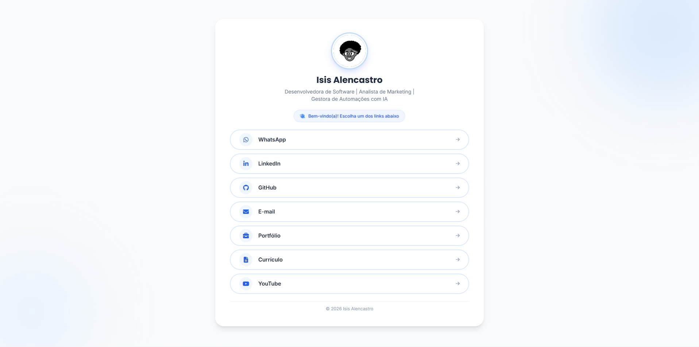

Link-in-bio page · 2026
Centra Links.
My links page: LinkedIn, GitHub, portfolio, résumé, YouTube and email on a single card, with an animated intro.

Why I made it
Every social network lets you add just one link. I didn't want to rely on a ready-made tool for that, with someone else's branding and no control over what shows up. A links page is a small project, perfect to build my own way.
The idea
A clean white and blue card with a two-step intro: first the photo, the name and a welcome message appear. Then the links show up one by one, in a cascade. It is a way to welcome whoever arrives, instead of throwing a list in their face.
All the links and texts live in a configuration file. To change or add a link, I edit one line and never touch the HTML.
Creative process
The first version loaded Tailwind and Font Awesome from a CDN. It worked, but it was heavy for such a simple page. In version 2.1 I revisited it with performance in mind: Tailwind is now compiled (about 10 KB) and the icons became inline SVG (about 7 KB, compared to roughly 300 KB for the icon font).
I also put the links in HTML inside a noscript tag, for people browsing without JavaScript and so Google can see the content, plus meta tags and structured data linking the page to my profiles.
Decisions I made
- Centralized configurationProfile, links, icons and meta tags in a single file.
- Zero CDNNo external requests for styles or icons. The page loads with what it has.
- Optional motionThe animation respects people who ask their system for less motion.
- VersioningA changelog and semantic versioning, even in a small project.
What I took away
Small projects deserve care too. Revisiting something that already worked and making it lighter taught me more about performance than many tutorials.